艱苦呀
手錶的時間調來調去，似乎連機械用品都得了時差，設定六點的鬧鐘在五點的時候就響了。
手錶掛在小多身上，聽到鬧鐘的聲響但是不知道現在的確切時間，只覺得才剛睡著而已怎麼就要起床了。
躺在帳篷裡睜開眼睛就能看到窗外，黑壓壓的天空很明顯太陽還沒冒出地平線，不賴床一下怎麼說得過去。
多睡了半小時才爬出帳篷，從窗外探出去全部都是霧濛濛的一片，昨天晚上沒下雨，但是起了濃霧，還好沒睡在野外，真是萬幸。
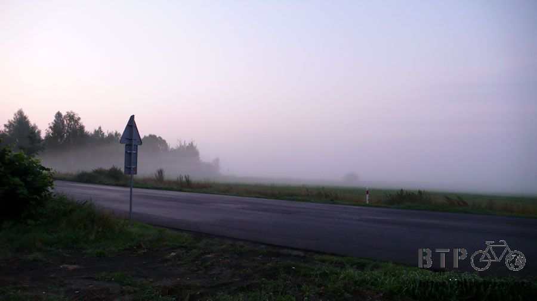
裝備收拾完畢，跟住在屋頂下的小鳥說掰掰，伸展一下身體準備要上路，這時候看手錶發現還不到六點。
實在太早起了，被鬧鐘擺了一道，自以為有賴床多睡到，結果還是一大清早就被挖起來，行李都收拾完畢了，也不可能再繼續睡大覺，上路吧。
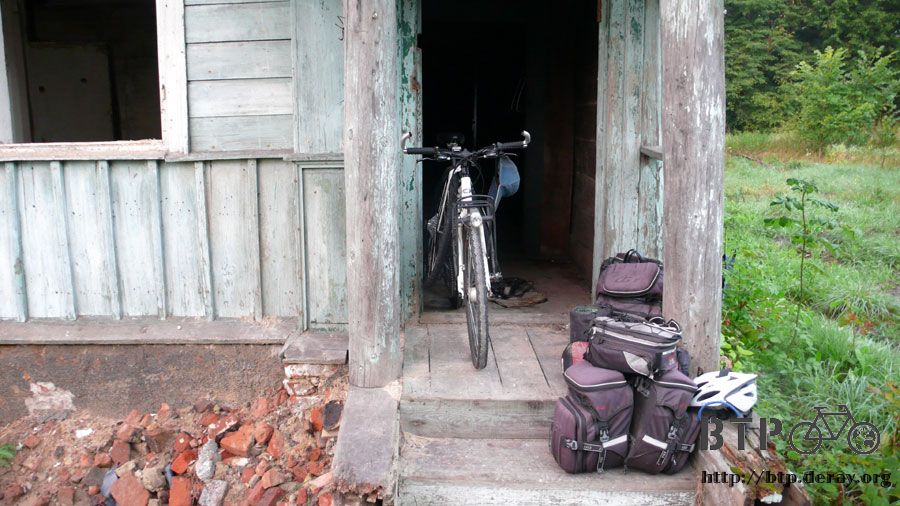
這棟空屋還沒有在濃霧的區域裡，往前一小段路就會進入一片白茫茫的世界。
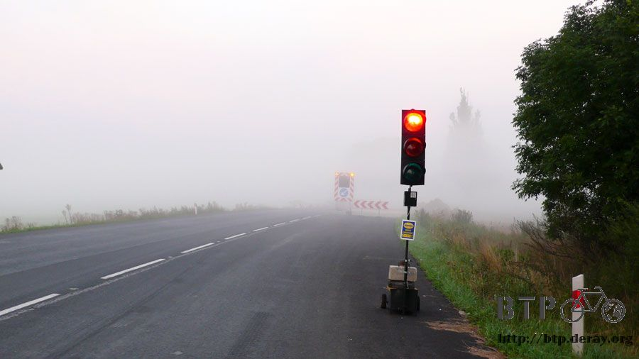
交通號誌顯示紅燈，就算是綠燈我也不敢走呀，霧濃到連車道會衝出什麼東西都看不清楚，小心翼翼的通過，能見度很低，騎車要注意安全。

怕的是車子開那麼快沒注意到我，萬一被撞到就慘了，打開小多後面的紅色閃燈提醒駕駛人我的存在。
這種程度的霧不知道能見度是多少公尺？
十多分鐘之後太陽才從霧色朦朧的地表緩緩上升，雖然它看起來小小的好像很弱，但是再過一個小時這些濃霧全都會因為太陽的照射而消散無蹤。

在一間休息的餐廳外面發現插頭，這次學聰明了，先拿變壓器出來試看看有沒有電，別一口氣就拿出全部的家當來。

可惜還是沒電，那就趁著天氣涼快多騎點路，中午的時候再找餐廳休息寫遊記吧。
這間旅館將價位給標示在外面，歐洲地區的旅館都會很清楚的標示出星等，這間是無星等的旅館，單人房要六十茲羅提，相當於九百台幣。
老闆一定覺得這個價錢很便宜所以才標示出來，但是對我而言還是太貴了一些，身上全部的財產也住不起一晚上。

新的交通指示牌，小心拿紅色氣球的小女孩，是當心兒童的意思嗎？設計得真是可愛。

進入歐洲之後教堂越來越隨處可見，一開始都會覺得很新奇而拍個不停，到後來就會看到麻痺連相機都懶得拿出來。
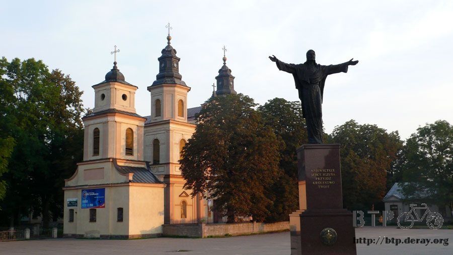
太陽能發電的交通指示牌，波蘭用的雖然是英文字母，但很明顯並不是英文，這些單字都有看沒有懂。
沒關係～只要地名跟距離看得懂就可以了，騎在主要道路上還迷路的話那真是笨得無話可說。

在路上常常會看到汽車的車頂上放一個『L』的藍色牌子，一開始根本搞不清楚這是什麼東西。
沒事做的時候就會開始胡思亂想這個L的意義是什麼：
『L』已經被月夜神給殺掉了呀，怎麼可能還開著車跑來跑去？
難到L是左駕的意思嗎？但是幾乎路上跑的車都是左駕呀，而且也沒看過有車子上面掛一個『R』的。

看到這個汽車駕訓場才知道正確答案，原來掛著『L』的車就是新手上路的意思，以後看到『L』的話要閃遠一點，他們開車的技術沒那麼好。
沿著紅色2號公路騎車，一大早就看到這個標示，禁止牽引機、禁止馬車這些我沒意見，禁止自行車是怎樣？

進到歐洲就是這一點很煩人，主要道路動不動就禁止自行車通行，這邊也沒有任何替代道路可以走，就算有我也不想繞路。
一開始看到這一個標誌我就假裝沒看到繼續騎。
隔幾百公尺又插了一個，換假裝看不懂，接著又出現一個，我就當它是插錯位置，沿路就這麼禁止下去，照騎不誤，被攔下來再說。
雖然說是禁止自行車通行，但路肩還規劃出很大一條來，不走實在太可惜，希望這個標誌少一點出現，真是非常的礙眼。
九點多到加油站買點喝的，水壺裡的自來水都用來擦澡用完了，剩下沒幾口配著早餐的蛋糕也全部喝光光。

加油站的商店賣的東西還真是不少，之前要找很久都不見得找得到的地圖，這邊一口氣就擺了一大堆。
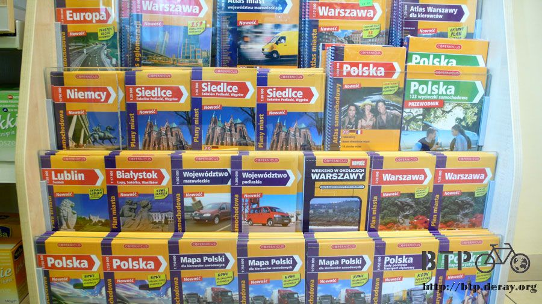
看是要全歐洲的地圖，或是單一個華沙的地圖這邊應有盡有，大概兩百台幣一本。
穿越波蘭花不到一個星期，地圖的開銷就省起來，靠指示牌也能騎車，盡量避開大城市就沒那麼容易迷路了。
瀏覽著開放式冰箱的飲料，價錢都不怎麼便宜，最划算就是這一瓶果汁了，兩公升裝的蘋果汁比其它牌子一公升裝還要便宜。

標價寫的是四點六九元，付給店員五元結果不找零，零錢最小的硬幣是五十分，小於這個金額的就自動無條件進位。
喝著蘋果汁往西邊騎，十一點的時候再度進入附設有餐廳的加油站準備吃午餐，肚子咕嚕咕嚕的叫，該吃點熱食，可能的話就端上大餐來吧！
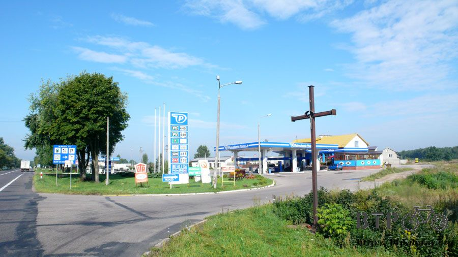
餐廳門口擺了三隻小木偶，裡面還蠻舒適的，之前旅行的模式：在餐廳附設的洗手台用毛巾擦澡。在波蘭也行的通，而且生飲自來水更加的妥當了。
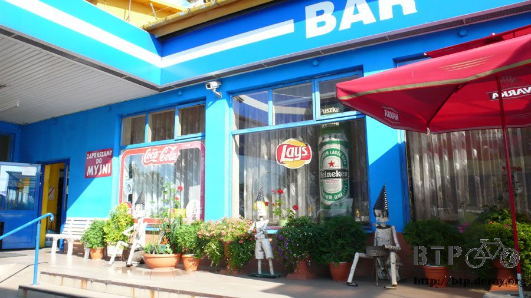
菜單上的字全部都是波蘭文，但是居然還看得懂一些簡單的字，像是漢堡、熱狗這些跟英文是一樣的寫法。
點了一份五元的披薩，同時拿出電腦跟充電器來，在這邊至少要耗上三個小時跑不掉。

現做的披薩等一會才會上桌，擦澡的時候遇到一個正在玩吃角子老虎機的大叔，瞧他開心的樣子看來玩這個還贏了不少錢。
洗過頭還在滴水的我正好變成他分享喜悅的對象，很大方的請我喝了一大杯的冰啤酒。
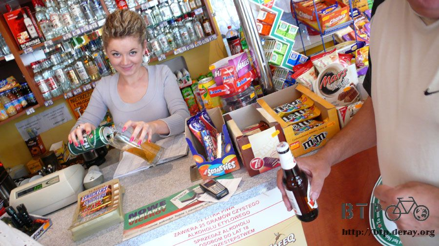
配著自己點的披薩也算是不錯的午餐～
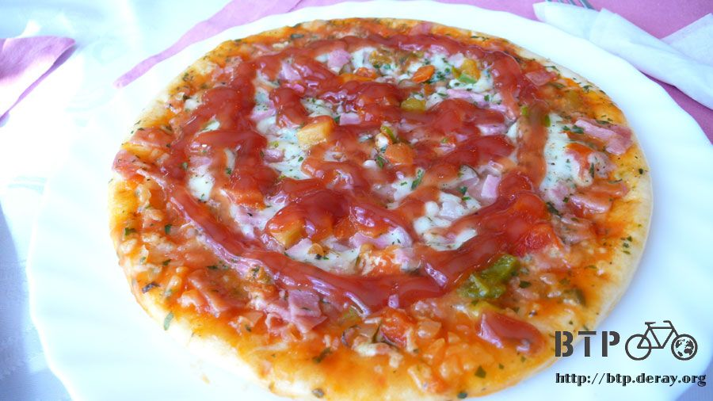
坐在店裡寫遊記，真的花很長的時間才整理好通關進入波蘭所發生的曲折事情。
這段時間只要聽到吃角子老虎機器發出中大獎的聲音，就知道大叔又要捧著一大把的硬幣請我喝飲料了。
大叔不論買什麼東西都是買兩份，多的一份就在桌上請我，喝完啤酒之後，陸續又喝了冰紅茶跟柳橙汁，甚至還問我肚子餓不餓？
大叔問我是不是要去華沙？
才不去呢～進去肯定會迷路，我要繞路避開華沙，往波茲南的方向騎去找朋友。
下午兩點要離開餐廳了，大叔又送了一大瓶的汽水讓我帶著路上喝。

兩個水壺在餐廳都裝滿了水，肚子裡也全部都是飲料，這一大瓶可樂有福但是難以消受，裝在小叮噹的口袋辛苦的帶著走。
兩公升裝的可樂放在胸口，非常嚴重的影響騎車的舒適感，好幾次掉到地上去，沿著路面滾呀滾的，我都很擔心它會氣爆。
離開餐廳之後沒多遠就進入了城鎮，這邊有自行車專用道，有種被尊重的感覺，跟早上那個禁止通行的標誌正好是完全相反的對比。

川流不息的車輛對於騎自行車一點安全的危害也沒有，因為自行車專用道不是跟汽車道設計在一起，而是獨立出來，跟人行道在同一邊。

進入城鎮很自然的就會尋找起網路，這邊可是歐洲，不用像之前那樣找網路的招牌，歐洲的城鎮滿街都是無線網路的訊號。
同時拿著電腦跟兩公升的可樂邊騎車邊找網路訊號實在有夠累贅，一下子忙不過來就氣得一口氣喝光全部的可樂，現在擔心自己的肚子可能會氣爆。
終於手上比較空閒，無線網路也找到幾個，可是都不能連線，有點失望。
走在街頭看到一間電腦商場，裡面的員工站在門口看著拿著筆記型電腦的我，難道我正在偷用他們的網路被發現了嗎？
老實的説自己是單車旅行者，三個人都點頭說他們看得出來，他們已經看著我從店門口來回走過三趟了，正想問我有沒有什麼需要幫忙的地方？
『有呀！請問這邊有網路可以用嗎？』

然後就被帶到店裡面，小多跟著牽進來放，聽說波蘭的自行車失竊率超高，這段時間小多更不能離開眼睛的視線。
順利得在這邊連上網路，一口氣上傳全部的遊記，包含一個小時前才寫好的波蘭序篇，進入歐洲就是不一樣，網路的速度快得令人感動。
同時更新Google Earth的地圖資料，接下來要到巴黎的路該怎麼走還沒有個概念呢～

待在店裡的時候員工們就看著網路上的單車遊記，還買飲料請我喝，又泡了咖啡同時端出奶油小麵包，在這裡真是有吃有喝有能辦正事，渡過一小時的快樂時光。

在店門口跟大家合照一張，大家在問英文版的遊記怎麼還沒有波蘭？
翻譯遊記的大家要加油喔～外國朋友相當的期待英文版的遊記早日完工，他們就先看照片止渴啦～
離開這個找到網路的小鎮，告示牌說走紅色2號再三十公里就會進入華沙，問題是我一點也不想進去華沙。
而且它畫得那麼簡單，好像進入華沙之後直直騎就可以離開華沙重新接上紅色2號，真的進去的話在裡面迷路半天都有可能。

目標是走紅色50號公路繞過華沙，但是這條路卻寫著禁止自行車通行，一樣的標誌早上我當做看不懂，這次則乖乖的遵守。
因為大卡車不能走紅色2號，所以通通跑去走紅色50號，加上沒有路肩，跟著騎這段路我怕命再多也不夠賠。
很不情願的，我還是騎到了華沙來，這個時間是下午六點不到，心中只有一個小小的期盼，在天黑之前讓我離開這邊就好，其它別無所求。
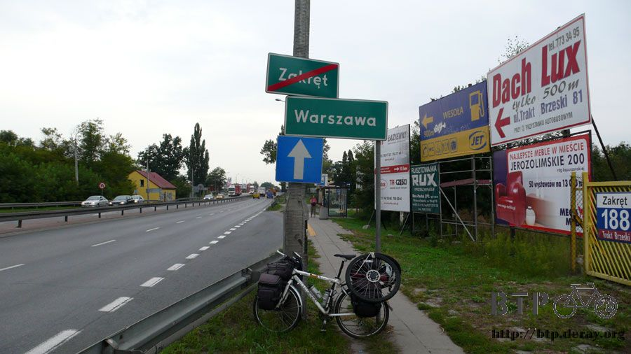
一開始還可能看見波茲南請往這邊走的告示牌，我當成聖旨一樣的跟著騎，只是好景不常，越進入市區這樣的告示牌就越罕見，到最後完全消失。
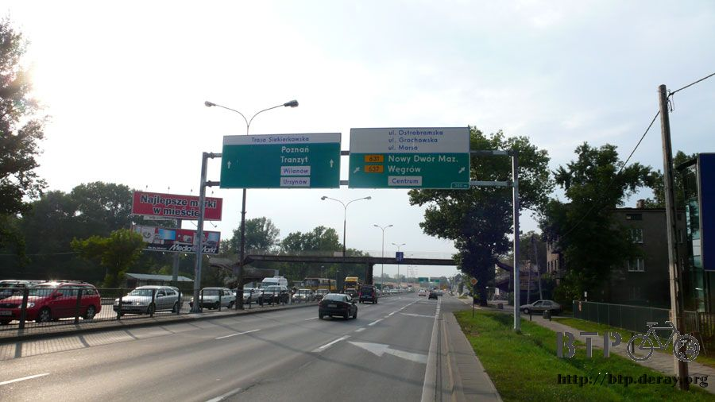
這大概是某個有名波蘭人物的故居，可惜不認識，不能多做介紹。
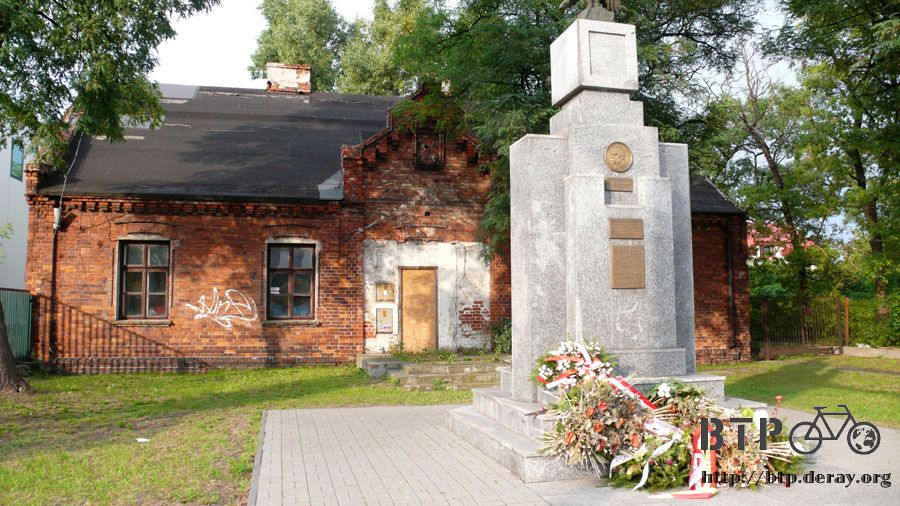
搞不清楚路況，只是跟著往波茲南的箭頭走，很明顯的我騎到了汽車專用道的高架橋上，心裡有點慌，逆向下橋更危險，只好硬著頭皮繼續往前騎。


下橋之後繞過分隔島，整個華沙都有自行車專用道，遍佈所有市區，沒有自行車到不了的地方，走這邊比較妥當。
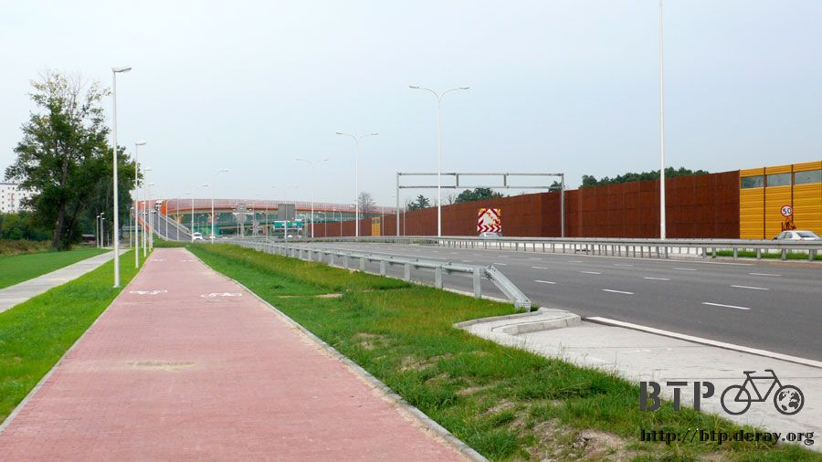
但是走在底下的自行車道看不見掛在橋面上的交通指示牌，有點搞不清楚自己是不是騎在正確的方向上。

明明有專用道可以走，我還是很白目的又騎上汽車專用道，只為了看著指示牌騎車，就這麼危險的跟汽車爭道過橋進入市區。

隔壁是自行車跟行人走的專用道，但是有護欄隔著我沒辦法翻過去，只好沿著馬路的邊緣小心的騎車，令人欣慰的是沒有汽車會按喇叭。

旁邊就是寬闊的河流，三分鐘前才下過一場小雨，天空稍微陰暗了點。
景色真漂亮，要是我也可以跨過這個欄杆到那邊去該多好。
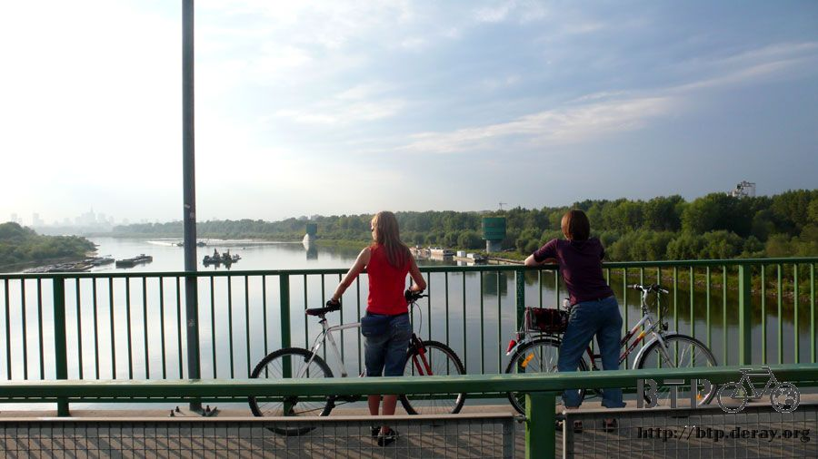
華沙有好多的自行車騎士，比起汽車的數量一點也不遜色，這一路上除了看告示牌之外就是問人。
大家也會很熱心的回答，而且跟我說的第一句話全部都是『你會說英文嗎？』
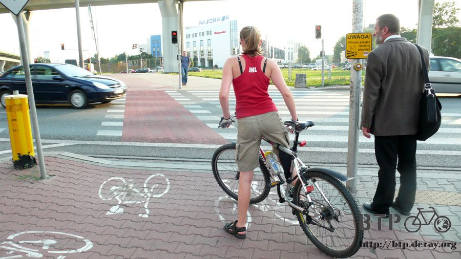
會！我當然會說英文！
文明歐洲的感覺再度浮現，不通了好久的語言一瞬間茅塞頓開，能夠明確的表達自己的意思跟聽懂別人的話感覺實在很棒。
馬路上的斑馬線分兩種，白色的給行人走，紅色的給自行車走，行人跟自行車也有專用的燈號顯示。

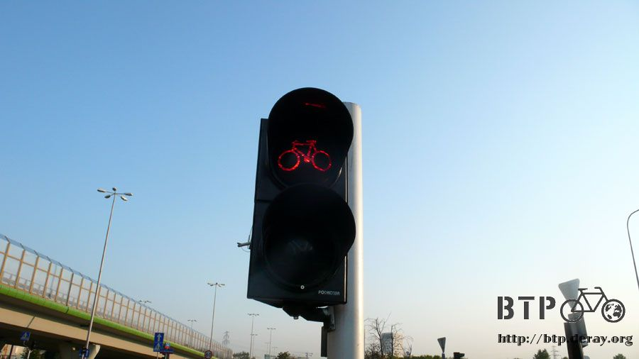
入城之前的地圖說，直直走就會離開市區並且接上紅色2號，我發誓自己是直直的騎，但是卻變成紅色7號，迷路的預感開始浮現。
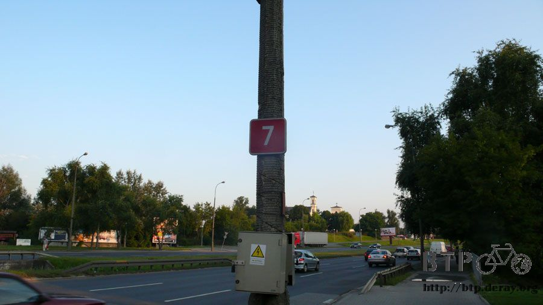
保險起見，一路上不停的問單車騎士跟路人，希望連拐錯一個彎的機會都不要有，只是身處市區正中央，就算是當地人也很難清楚的說出波茲南該怎麼走。
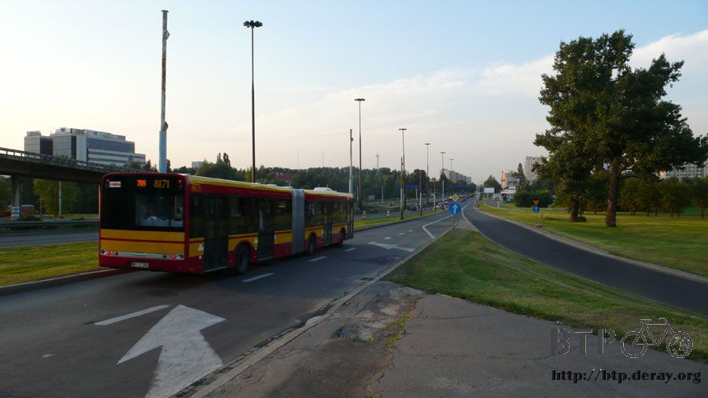
不斷的左轉、右轉、過馬路、走天橋、下隧道，心裡跟自己說絕對不要覺得自己正在迷路，因為一旦這麼想的話，那就代表真的迷路了。


此時的最高指導原則『方向』，拿出指南針配上太陽落下的方向往西邊一直騎，看來又要穿越整個華沙才有辦法接上紅色2號了。
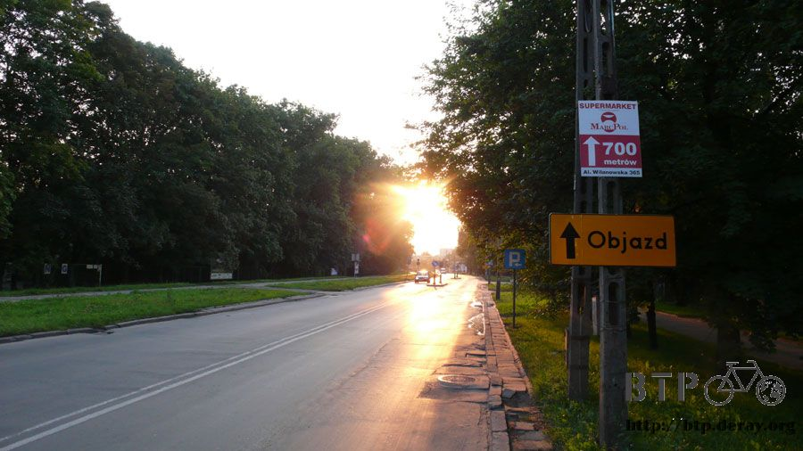
擺脫紅色7號之後，要去的西邊變成紅色8號，顏色是正確但是數字還差了一點。至少太陽在的方向是我要去的地方，這樣就不會錯得太離譜。
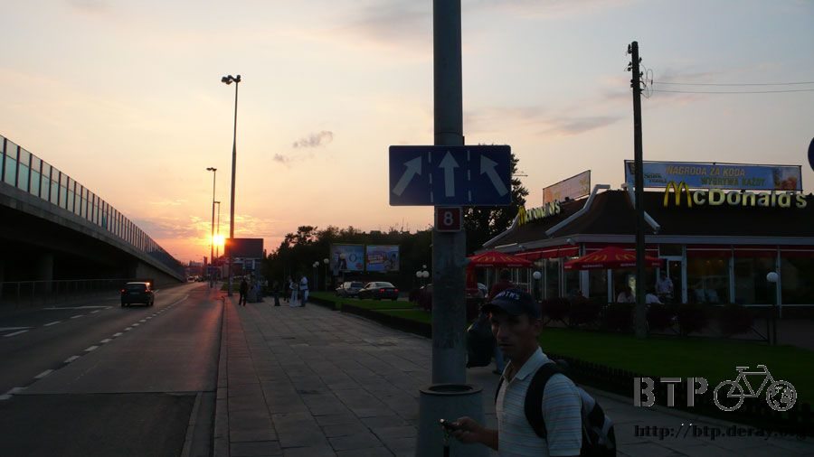
眼看太陽又要下山了，你先別走呀～早上我比你還早就起床，現在我有如熱鍋上的螞蟻，你怎麼可以就這麼拋下我。

騎的路時大時小，莫名奇妙又變成橘色719號公路，如果這樣還不叫迷路的話，那迷路的定義是什麼？
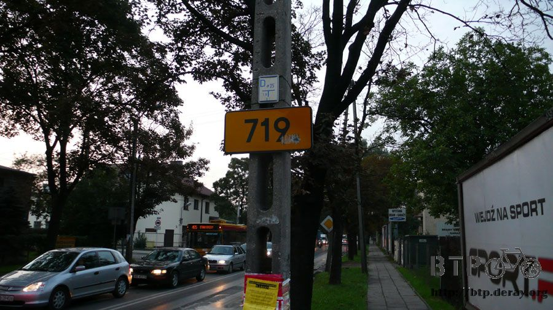
就算是走錯路好了，最起碼可以肯定的是自己正在離開市區。

標準越降越低，只要能走得出這個大迷魂陣，就算沒接上正確的路也不打緊，再想辦法兜個圈子繞來回來就好，讓我離開華沙吧 T_T
天要黑了，太陽看不見影，天空看起來還亮亮的，但這不過是最後一小時的光明，路邊連街燈都亮起來。
從北京出發的第一天開始就迷路的我，一直覺得迷路沒什麼大不了，總會有找到正確路的時候。
但是身處迷路情況當中的那種心情還是很難冷靜下來，市區的路幹嘛老設計得那麼複雜，真懷念鄉間小道一條大路直直走的安心感。

問了起碼三十個路人，之後看GPS的軌跡，自己以不可思議的路線穿越了華沙，奇蹟般的還是讓我騎了出來，此時是晚上九點。
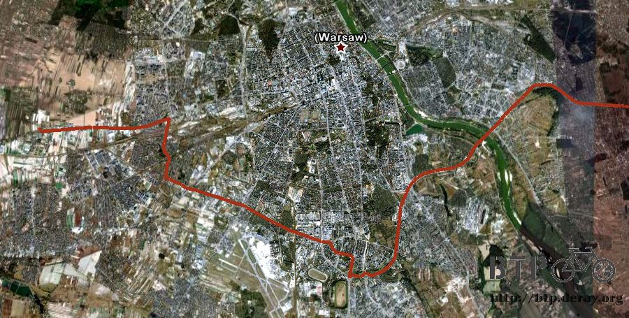
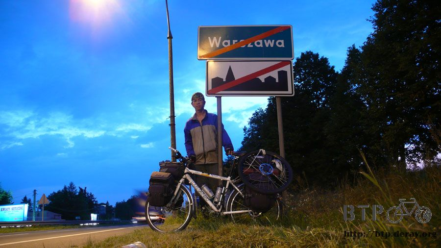
太陽下山的緣故，太陽眼鏡早就收了起來換戴一般的眼鏡，從進入到離開花了三個小時，沒有開心的到處觀光，完全單純在找路離開就花這麼久的時間。
下一個會經過的迷宮是德國的首都－柏林，如果可以的話我真的想跳過這座大城市，有機會再好好的去觀光，迷路在市區真是太恐怖的事情了。
順利的離開市區已經讓我很開心，很不可思議的居然還接上紅色2號公路，真是奇蹟中的奇蹟，此時距離波茲南不到三百公里，兩天沒問題。
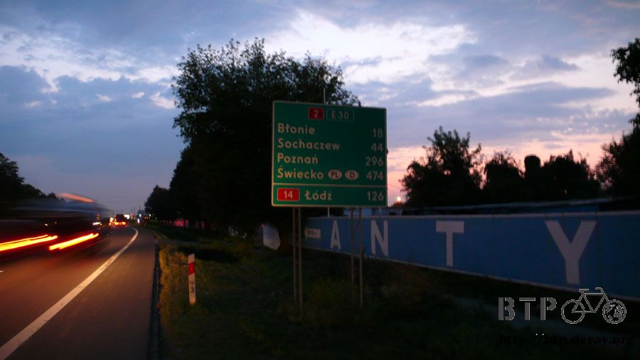
離開市區之後就要準備找過夜的地方了，說是離開首都但是這一路上還是一樣很熱鬧，並不是跨過華沙的牌子之後就變成農地。
十點半的時候發現這一間大門沒有拉上柵欄的廠區，看起來很明顯已經下班休息了，我只需要一個小角落窩一晚上即可。
今天晚上肯定會下雨，所以還得附帶一個小屋頂。

牽車進入廠區，所有的門都是關閉的，就算沒鎖我也不敢隨意闖進去，這邊有一個小小的雨棚，就這樣靠在門邊坐著睡一晚上也是不錯吧～
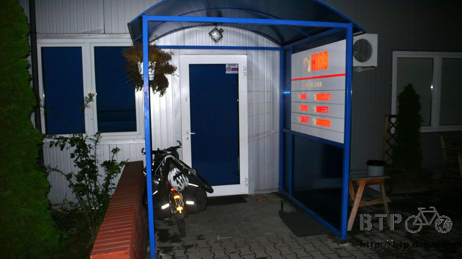
卸下包包之後，洗把臉換上睡衣，今天就這麼結束也挺好。
廠區入口處開進來一輛車，心中感覺極度得不妙，但是行李都已經卸下來，我這麼大一個人是要躲去哪裡？
老實的站在雨棚下等著車輛開過去，明亮的頭燈照映出黑夜中的我，駕駛停下車子，問我在這裡幹嗎？
說自己是單車旅行者根本沒有用，對方的口氣很不好，與其說是叫我離開，不如說是叫我滾蛋比較貼切。
卸下滿地的行李又得重新掛回小多身上，還要換回騎車的衣服，本來以為今天已經結束了，看來還沒那麼容易。
在駕駛緊迫盯人的眼光中牽著車離開場區進入黑夜，此處不留人只好繼續往下騎。
第二個找到的還是廠區，一樣大門沒有拉上柵欄，裡頭看起來沒有人，圍牆的上方有突出的屋簷勉強算是能夠擋雨。
將小多靠著牆放好，卸下後側的三個包包減輕它的負擔，這次不拿出任何行李也不換裝了，不知道什麼時候又會被趕走，就穿著原本的衣服靠著牆睡覺。
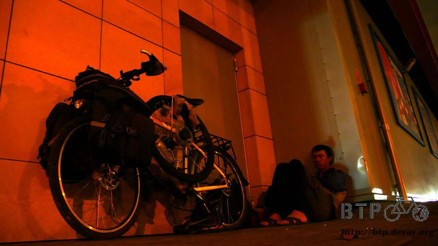
睡袋、帳篷、睡墊這些全部都沒有拿出來，腳上穿著拖鞋是剛剛被趕走的時候沒有穿回鞋襪。
靠著牆閉上眼睛，睡不著也得至少休息一下恢復體力，明天還得騎車。
午夜十二點，有人走近的聲音讓我張開了眼睛，是一位白髮斑斑的老警衛，拿手電筒照著我，也問了我在這邊幹什麼？
同樣回答單車旅行者，能不能讓我在這邊待一晚上，天一亮馬上離開，不給你添麻煩的。
對方看著我不發一語的就走掉，心中高興以為是默許的意思，還是老人家好溝通。
這時候才拿出睡袋當棉被蓋，看著天空黑壓壓的雲跟閃電，有點擔心萬一下雨的話這種小屋簷會有多少遮雨的效果？

五分鐘後，一輛汽車又開了過來，走出一位孔武有力的男士，旁邊是剛才那位老警衛。
原來他不發一語的離開不是默許的意思，而是去找人來趕我走，一開始以為是警察，仔細看了一下原來只是同一間保全的警衛。
不用多說當然又是叫我立刻滾蛋，才剛拿出來的睡袋還沒蓋熱又要捲老半天收進袋子裡，還好這次不需要換衣服。
第二次被趕走，心情有點沮喪，怎麼露營會那麼困難？
因為這裡是城市的關係嗎，那接下來一路到巴黎的路上都是城市呀。
重新回到路燈照明的馬路上，看著告示牌心裡想說那乾脆夜騎一整個晚上，再加上白天的距離，搞不好可以騎上三百公里，這樣明天就可以去找小鵝了。
只可惜這個提案很快就被自己給否定掉，夜騎太危險了，就算真的平安夜騎到天亮好了，還有精神跟體力繼續騎上一整天嗎？
繼續找過夜的場所，第三個找到的是住宅區，林立的大廈一棟棟並排展開，挑了一棟最裡面的，感覺進出的人比較少。
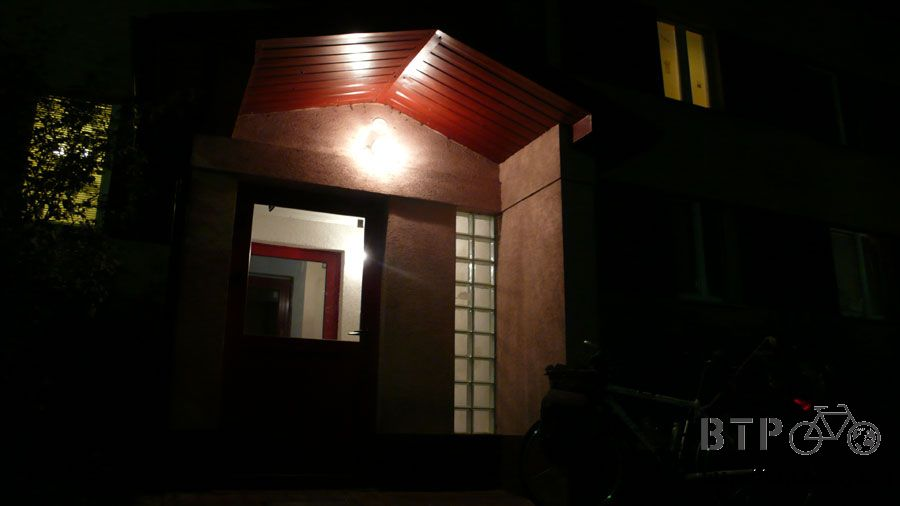
這個時候都凌晨一點了，不至於還有人走進走出吧？
外頭也有一小片紅色的屋頂可以擋雨，當我試著去拉門把的時候，意外的居然沒有鎖，所以就將小多牽到裡面去，自己也坐在大門入口的地上靠著牆睡。

第三個過夜的場所了，希望別再被趕走，但依然隨時做好被趕走的準備，就這麼坐著睡吧。
半夜三點有人進來，是個像大學生的女生，一開門看到我跟小多當然是嚇了她一跳。
她進去房子裡面之後又掉頭走出來，以為是要趕我走，但是並沒有，她問我需不需要喝點水或是什麼？
我想了一下，跟她說不用了，只要讓我在這邊待一個晚上就可以，此時外頭正在下大雷雨。
連續兩次被兇巴巴的趕走，這一次得到溫暖的詢問心裡很感動，只是不想太麻煩別人，還是別要求太多的好。
真的要感謝前面兩個趕我走的人，抵達這棟公寓之後馬上就雷聲轟隆、大雨滂沱而下，風勢呼嘯的聲音感覺跟颱風沒兩樣。
這種天候如果在剛才那兩個地方過夜的話，不知道會被淋濕成什麼地步？

今天的日誌標題是『艱苦呀』，並不是說今天過得很艱苦，而是波蘭語的『謝謝』發音就是『艱苦呀』。
學會這句話之後馬上就變成最常掛在嘴邊的話，一整天都是艱苦呀～艱苦呀～艱苦呀～的謝個沒完。
其實這個旅行一點也不艱苦，倒是累積越來越多的謝謝。
在室內非常安心的聽著大雷雨的聲音，以及剛才的溫暖問候語，這座城市其實也沒那麼冷漠，一句關懷的話就足以平復掉一萬句的立刻滾蛋。
繼續閱讀：8.23 遍地明燈
波蘭-茲羅提－ 1：12 台幣
8.22 |
總計：10元 |
加油站果汁5元、餐廳披薩5元 |
|